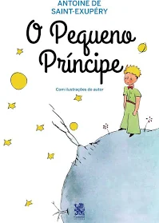

Livro: O Pequeno Príncipe
Disponível para troca ou empréstimo. Um clássico da literatura mundial sobre amizade, imaginação e valores humanos.
Ver maisLivro: Dom Casmurro
Disponível para empréstimo. Obra clássica de Machado de Assis muito utilizada em vestibulares e estudos escolares.
Ver maisEspaço de Compartilhamento
O BiblioShare incentiva o acesso à leitura e à educação, promovendo o compartilhamento de livros entre pessoas.
Conhecer projeto